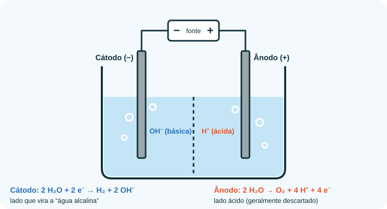
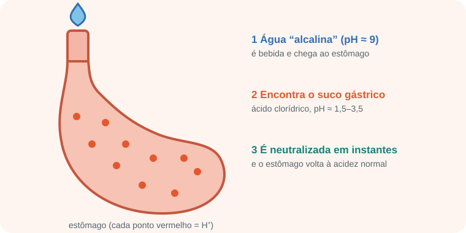

Início › Água alcalina
Água “alcalina”: o que é e o que não é
Uma água com pH acima de 7 é simplesmente uma água levemente básica. O marketing transforma esse número em promessa de saúde, mas a química e o estômago contam outra história.
O que as marcas chamam de água alcalina
Em geral, é uma água com pH entre 8 e 9,5. Ela pode chegar a esse valor de três jeitos:
- Mineral natural rica em bicarbonato e outros sais, que deixam a água levemente básica.
- Água com minerais adicionados (por exemplo, bicarbonato), ou com gotas e pastilhas que elevam o pH.
- Ionizadores: aparelhos que usam eletrólise para separar a água em uma parte básica e outra ácida.

pH não é capacidade de neutralizar ácido
Aqui está o ponto central. O pH diz o quanto a água é básica agora. Já a alcalinidade (capacidade de neutralizar ácido) depende de quanta base está dissolvida.
pH é como a temperatura da água; capacidade de neutralizar é como a quantidade de água. Uma xícara de chá a 90 °C é “muito quente”, mas não aquece uma banheira. Uma água a pH 9 com poucos minerais é “muito básica”, mas tem pouquíssima base para neutralizar um estômago cheio de ácido.
O que acontece no estômago
O estômago produz ácido clorídrico (HCl) e mantém o conteúdo em pH de cerca de 1,5 a 3,5. Essa acidez ativa a pepsina (enzima que começa a digerir proteínas) e ajuda a reduzir microrganismos que chegam com os alimentos. O estômago secreta, ao todo, cerca de 1 a 2 litros de suco gástrico por dia.

Depois do estômago, o pâncreas libera bicarbonato no duodeno para neutralizar o conteúdo ácido que vem do estômago. Ou seja, o corpo já fabrica a própria “água alcalina” onde ela é necessária — na quantidade certa.
O que a ciência encontrou
- Câncer: uma revisão sistemática publicada em 2016 (Fenton e Huang, BMJ Open) não encontrou evidência de que dieta ácida ou água alcalina causem ou previnam câncer.
- Refluxo: há estudos de laboratório e ensaios pequenos sobre água de pH ≈ 8,8 e inativação da pepsina. Os resultados são preliminares e não substituem orientação médica.
- Hidratação e desempenho: não há demonstração consistente de que seja melhor que a água comum. A melhor água é a que você bebe em quantidade suficiente.
- “Desintoxicar”, emagrecer, retardar o envelhecimento: sem evidência. Fígado, rins, pulmões, pele e intestino já fazem a eliminação de substâncias.
Beber água com pH 9 não “alcaliniza” o sangue, porque o estômago neutraliza a água e o sangue é regulado de forma independente do que você bebe.
Segurança, custo e rótulos
Para a maioria das pessoas saudáveis, beber água com pH um pouco mais alto não costuma ser perigoso. Mas também não há benefício comprovado, e aparelhos e garrafas especiais podem custar bem mais do que a água comum.
Quem tem doença renal ou usa medicamentos deve conversar com o médico antes de adotar águas muito mineralizadas, gotas ou suplementos “alcalinizantes”.
Checklist de propaganda
- ✅ Confira a composição mineral (bicarbonato, cálcio, magnésio, sódio) em vez de olhar só o pH.
- ⚠️ Promessas de cura, “detox” ou rejuvenescimento são sinal de alerta.
- ⚠️ Depoimentos e antes/depois não são estudos científicos.
- ⚠️ Desconfie quando o texto mistura fatos reais de química com conclusões que não decorrem deles.